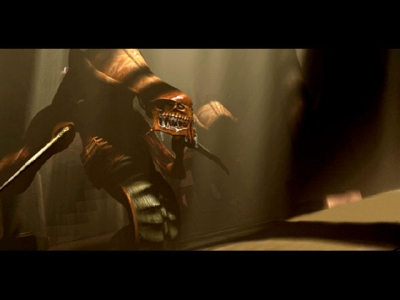
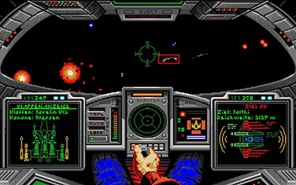
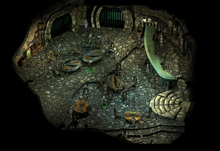

Combien de fins pour mon jeu ?
L'article original est écrit par Ernest Adams publié par Gamasutra (décembre 2004).
L'auteur original n'est en aucun cas reponsable de la précision de cette traduction.
« Ce sont nos choix, Harry, bien plus que que nos capacités, qui déterminent qui nous sommes vraiment. »
-- Albus Dumbledore, Harry Potter et la chambre des secrets.

Il y a quelques temps, j’ai été engagé par un studio pour travailler comme consultant sur un jeu de tir qui proposait plusieurs fins. A la lecture des documents de game design, je me suis rendu compte que celles-ci étaient toutes aussi sombres les unes que les autres. J’ai dit aux designers que les jeux de tir grand public ne sont pas des romans de Kafka et que les joueurs qui parviendraient à la fin d’un tel jeu estimeraient avoir droit à au moins une fin modérément positive. Et ils en ont tenu compte.
D’un point de vue artistique, mon argument n’était pas valable : les designers devraient pouvoir créer l’équivalent vidéoludique des romans de Kafka, s’ils le souhaitent. Mais d’un point de vue commercial, je pense que c’est une décision saine. Ce studio m’a demandé mon avis sur un jeu commercial et je pense que le public n’est pas encore prêt à dépenser 50 dollars [NDT : !!!] pour un jeu de tir triple A qui ne peut que mal finir. Gagner et perdre a beau être une question de définition, une mauvaise fin donne toujours la sensation de perdre et un happy ending donne toujours un sentiment de victoire. Au fil des années, nous avons entrainé les joueurs à penser qu’ils finiront toujours par gagner à la fin d’un long jeu, même s’ils doivent n’y arriver qu’après de multiples tentatives. Plus le jeu est long, plus le joueur s’est investi dedans et moins il acceptera une mauvaise fin, comme je l’ai expliqué à mes clients. Les jeux d’aventure ou d’énigmes peuvent s’en tirer, mais si un survival se solde par la mort du joueur, celui-ci risque de ne ps apprécier.
Néanmoins, cette situation m’a fait réfléchir sur le problème des fins multiples. C’est une question essentielle pour quelqu’un qui conçoit un jeu vidéo : le jeu doit-il proposer une une ou plusieurs fins ? Comment devraient-elles se dérouler et comment en décider ?
Fins et types de jeux
Si vous faites une partie de billard avec quelqu’un dans un bar, deux issues sont possibles : vous gagnez ou vous perdez. Si vous vous asseyez pour faire un poker, quand vous quittez la table, soit vous avez plus d’argent qu’au début de la partie, soit moins : ce score final vous permet de définir simplement victoire et défaite. Sans plus d’analyse, on pourrait conclure que les jeux vidéo doivent proposer ou bien une façon de gagner et une façon de perdre, ou bien un score final. Néanmoins, beaucoup de jeux vidéo – et même pour la majorité d’entre eux – ne sont pas semblables au billard ou au poker. Comme il y a une immense variété de jeux possibles, il est difficile de définir des règles de conception qui s’appliquent à tous. Je vais essayer de traiter le problème en séparant les jeux en différent types et pour certains d’entre eux, la réponse sera assez immédiate.
On peut déjà répondre simplement à la question des jeux en équipes et des jeux compétitifs multi-joueurs, qu’il s’agisse d’une simulation de billard ou de Counter-Strike. Les jeux compétitifs doivent évidemment proposer les fins standards mentionnées plus haut : c’est ce que les joueurs attendent lorsqu’ils jouent l’un contre l’autre. Pour les jeux multijoueurs en coopération, où les joueurs jouent ensemble contre l’ordinateur, c’est un peu moins clair : dans certains cas, ils gagnent tous ensemble, dans d’autres, ils perdent tous ensemble. Parfois, un joueur abandonne les autres en cours de partie. En fin de compte, trois types de fins sont possibles : aucun joueur ne gagne, certains joueurs gagnent, tous les joueurs gagnent (souvent, les deux dernières options sont confondues).
On peut aussi répondre simplement pour la plupart des jeux online massivement multijoueurs, en particulier pour les univers persistants et les MMORPG. En général, ils ne proposent pas de fin du tout. L’intérêt de ce genre de jeux est précisément que les joueurs peuvent continuer à joueur indéfiniment. Les joueurs essayent de ne pas « perdre » – à savoir mourir – mais la mort n’est en général pas permanente et dans tous les cas, le jeu continue pour les autres joueurs. Il n’y a pas de « victoire » à proprement parler dans un monde persistant, à moins qu’il n’y ait une fin et une condition de victoire proprement définies, ce dont je n’ai jamais entendu parler [NDT : Curiosity ?]. Dans SimCity et dans la plupart des citybuilders, vous ne pouvez ni perdre ni gagner, le jeu n’ayant donc qu’une fin – et comme dans le cas des MMORPG, la « victoire » ne constitue pas le but du jeu. Les jeux d’arcade classiques comme Space Invaders ne proposent pas non plus de condition de victoire : le jeu se contente de devenir de plus en plus difficile jusqu’à ce que vous perdiez. La seule façon de « gagner » est de mourir avec un score plus élevé que quiconque a jamais joué. Mais qu’on définisse ceci comme une victoire ou une défaite, le jeu ne propose en fin de compte qu’une seule fin.
Les jeux courts à un seul joueur (disons d’une durée allant de quelques minutes à trois ou quatre heures) sont aussi relativement simples de ce point de vue. La plupart ne sont pas très complexes et rentrent dans un schéma victoire/défaite comme le solitaire ou bien donnent un score final qui permet au joueur de décider s’il a gagné ou perdu.
Les jeux longs à un seul joueur
Il nous reste maintenant le cas des jeux longs à un seul joueur et ceux-ci sont en général plus complexes à traiter. Tout d’abord, intéressons nous à ce qui se passe quand l’avatar du joueur meurt au milieu d’un tel jeu. Il s’agit évidemment d’une « défaite », mais je crois qu’il ne s’agit pas à proprement d’une « fin ». Évidemment, cette défaite met fin à l’expérience de jeu mais elle ne constitue pas une véritable conclusion au jeu. Le joueur sait qu’il n’a pas été au bout du jeu et qu’il devrait réessayer. Il n’y a d’ailleurs pas beaucoup d’intérêt à créer beaucoup de contenu pour accompagner la mort de l’avatar du joueur, parce que le joueur risque de le voir souvent et d’en être lassé. Pour les besoins de la discussion, je vais maintenant laisser de côté ce type de fins prématurées.
Alors, si on laisse de côté le game over, combien de fins un jeu long pour un seul joueur devrait-il proposer ? La réponse a à voir avec l’esprit du gameplay et avec les buts que ces différentes fins devraient servir. Tout d’abord, prenons le cas de jeux longs à un seul joueur parmi les plus vieux du genre, les side-scrollers. Dans ces jeux, le joueur est confronté à un flot continu d’obstacles et doit lutter pour sa survie. La plupart du temps, ils ne proposent qu’une fin, conçue de sorte à donner une sensation de triomphe au joueur. C’est la récompense du joueur pour avoir réussi à se frayer un chemin jusqu’au bout sans mourir. Des fins multiples seraient ici inutiles : elles auraient pour effet de réduire ce sentiment de victoire chez le joueur. Si l’une des fins constitue une plus grande récompense que les autres, le joueur va la voir comme la « bonne » fin – la meilleure fin – et verra les autres comme inférieurs, même si elles ne sont pas présentées comme des défaites. Ça na pas tellement d’intérêt, à moins de vouloir établir une distinction spécifique entre une « bonne » partie et une « excellente » partie, par exemple avec un niveau ou une cinématique bonus.
Les jeux longs à histoire
Considérons maintenant un jeu long, à un seul joueur, mais avec une histoire. Starcraft, par exemple, propose une histoire linéaire avec une seule fin. La manière de jouer ne change pas l’histoire. De la même façon que pour les side-scrollers, le gameplay se concentre sur la survie et la victoire, et lorsqu’il gagne, le joueur est récompensé en découvrant la suite de l’histoire. Le jeu ne donne pas la possibilité au joueur de changer l’histoire et en fait, l’histoire est essentiellement utilisée pour lier entre elles différentes missions. Il est possible de faire le jeu d’un bout à l’autre sans s’intéresser le moins du monde à l’histoire : finir les missions est une récompense en soi [NDT : pour avoir fini le jeu quand j’étais plus jeune sans comprendre un mot d’anglais, je confirme pleinement les dires de l’auteur.].
Attention : petit spoiler pour Half-Life dans le paragraphe suivant.
Je pense que des jeux comme Starcraft n’ont besoin que d’une fin et que celle-ci devrait être présentée comme une victoire (bien qu’on puisse évidemment laisser certains éléments en suspens pour une éventuelle suite). Faire suivre au joueur une histoire linéaire jusqu’au bout pour tout d’un coup lui présenter différentes fins est amusant mais en fin de compte superflu. Je pense qu’il s’agit par exemple d’une (toute petite) faiblesse de Half-Life. La proposition que fait G-Man à Gordon s’avère être une offre que le joueur ne peut pas refuser, alors à quoi bon ? C’est un choix bancal et une perte de temps pour le jeu. Et s’il s’était agi d’un choix légitime, il aurait alors fallu deux suites différentes, une pour chaque alternative.
Néanmoins, certains joueurs sont vraiment intéressés par l’intrigue et aiment à jouer un rôle dedans : ces joueurs voudront ressentir l’impact et les implications de leurs actions. Pour eux, leurs actions devraient impacter les évènements de l’histoire et ceci passe éventuellement par un système de fins multiples. Wing Commander constitue un bon exemple de ce type de jeu. Il est connu pour proposer une intrigue véritablement non-linéaire. L’échec d’une mission ne se solde pas nécessairement par une fin prématurée, mais change simplement le tour que prend l’intrigue. La réussite ou l’échec des missions devient un élément narratif et en effet, Wing Commander propose différentes fins.
Néanmoins, je ne crois pas que ceci soit absolument nécessaire. Ça dépend de la nature de l’intrigue elle-même. Un seul soldat a très peu de chance de faire une différence significative dans une guerre. Il peut apporter une séries de contributions, modestes mais cumulatives, et ses choix affecteront profondément son expérience personnelle, mais lui-même ne changera pas nécessairement l’issue du conflit. L’objectif du jeu est de survivre à la guerre et différents joueurs s’attaqueront au problème de façon différente et expérimenteront des histoires différentes, mais en fin de compte, la fin est la même : le joueur a réussi à survivre et la guerre s’achève (peut-être). On peut donc légitimement concilier une intrigue non-linéaire et une fin unique, si la fin se focalise sur les évènements à grande échelle plutôt que sur les expériences personnelles.
Challenges et choix
Quand vous essayez de déterminer combien votre jeu devrait proposer de fins, tenez compte des différents types d’actions dont le joueur dispose pour impacter l’histoire. Si c’est la réussite ou l’échec face à des challenges qu’on lui propose qui permettent au joueur de changer le déroulement de l’histoire, alors celle-ci devrait se construire autour de la performance du joueur, avec des fins qui différent en fonction de celle-ci – des fins bonnes ou mauvaises, ou peut-être un score final avec différentes conséquences. Les joueurs ont légitimement le droit de s’attendre à une forme de récompense lorsqu’ils réussissent un challenge, qu’il s’agisse de loot comme dans les RPG ou d’une fin positive à l’histoire, et inversement. C’est le cas de Wing Commander, où ce sont les challenges (à savoir réussir les différentes missions) qui contrôlent principalement le déroulement de l’histoire.

L’autre grand type d’actions qui permet de changer l’intrigue, ce sont les choix. La différence entre challenge et choix est que le choix de requiert pas que le joueur accomplisse quelque chose (même si ledit choix peut-être difficile à faire). En conséquence, il n’y a pas de présupposé selon lequel un bon choix entrainerait une récompense ou même qu’il existe un bon choix. Bien sûr, il est possible de proposer des bons et des mauvais choix menant à de bonnes et à de mauvaises fins, mais attention : si c’est trop appuyé, le jeu risque de devenir manichéen voire moralisateur. Il est plus intéressant de proposer au joueur des choix moralement ambigus et d’explorer certaines de leurs conséquences.
Le choix simple est le plus facile à implémenter : le joueur prend une décision précise et l’intrigue suit une direction qui dépend de l’alternative choisie. Au choix suivant, on a un nouvel embranchement de l’histoire. Si les conséquences sont immédiates, ceci peut paraître mécanique : le joueur voit se dessiner l’arbre des choix qui lui sont proposés. Bien que ce soit indispensable pour les RPG [NDT : occidentaux], il s’agit d’une des faiblesses des dialogues basés sur un arbre de décision : on voit vraiment l’arbre se dessiner à mesure qu’on avance dans les dialogues. On peut atténuer cet aspect mécanique en retardant les effets d’un choix (le jeu prendre note de la décision du joueur sur le moment, mais l’histoire ne prend un tour différent que plus tard). Néanmoins, cette façon de procéder a aussi ses inconvénients. Si le joueur regrette sa décision, il doit revenir loin en arrière dans le jeu – en supposant qu’il ait encore une sauvegarde suffisamment ancienne. Le Guide du Voyageur Intergalactique a été maudit par nombre de joueurs, parce qu’il propose un choix apparemment insignifiant au tout début du jeu qui empêche le joueur de gagner une fois celui-ci arrivé à la toute fin. En règle générale, un choix ne devrait pas être insignifiant, ses conséquences ne devraient pas intervenir avec un trop grand décalage et le joueur devrait en connaitre (ou être capable de déduire) les conséquences. Et bien sûr, un choix ne produit pas nécessairement une seule conséquence : choisir un alignement mauvais dans Donjons et Dragons a par exemple des conséquences tout au long du jeu.
Une autre forme de choix est le choix cumulatif, dans lequel les actions cumulées du joueur affectent l’intrigue, pas ses actions prises individuellement. C’est ce qu’on trouve dans les jeux qui donnent la possibilité d’être bon ou mauvais, sans vous demander spécifiquement de choisir en début de partie. Black and White en est un bon exemple : l’accumulation de vos décisions affecte le déroulement du jeu et l’apparence de votre créature (il ne s’agit pas exactement d’un avatar).
Ce dont on peut être sûr, c’est que si l’histoire change avec les décisions du joueur, il voudra revenir en arrière pour voir ce qui ce serait passé s’il avait pris une autre décision. C’est dans la nature humaine de s’intéresser à ce qui aurait pu se produire dans d’autre circonstances. Soyez cléments avec vos joueurs : donnez leur la possibilité de sauvegarder avant les choix importants – tout particulièrement si leur décision peut avoir des répercussions catastrophiques qu’ils n'auraient pas pu prédire.
Intrigues multiples et fins multiples
Dans un jeu avec beaucoup de choix, l’histoire peut produire un nombre d’embranchements qui croît exponentiellement et, en théorie, un nombre énorme de fins possibles. Dans la pratique néanmoins, je ne crois pas que ce soit très intéressant. Tout d’abord, il est très couteux de créer autant de contenu, comme s’en sont rendu compte les développeurs de Wing Commander : pendant des années, Wing Commander IV a été le jeu le plus couteux à développer de tous les temps. Mais au delà de ça, je n’ai pas l’impression que ce soit vraiment nécessaire. Un joueur intéressé par l’intrigue aura rarement envie de disposer d’une liberté totale pour explorer chaque embranchement. Un joueur intéressé par une liberté totale jouera à un Grand Theft Auto , laissera de côté les missions et l’intrigue et ira simplement explorer la ville et la mettre à feu et à sang.
Ce qu’un joueur intéressé par l’histoire recherche, c’est une conclusion narrative satisfaisante et crédible à l’expérience qu’il vient de vivre. Une fin qui permet de faire retomber la tension dramatique de l’histoire d’une façon cohérente. Ceci ne requiert pas nécessairement un grand nombre de fins. Souvenez-vous de vos cours de littérature [NDT : pour les Anglo-Saxons, du moins] : une histoire devrait comporter un thème, une thématique. Le thème est le cœur de l’œuvre et il devrait toucher le joueur, intellectuellement et émotionnellement. La présence d’un thème riche est caractéristique des grandes œuvres de la littérature et c’est ce qui différencie une œuvre d’une simple distraction. La thématique d’une histoire peut être ambigüe, mais elle ne devrait pas être contradictoire ou illogique. Une part essentielle de cette thématique passe par la façon dont l’histoire se conclut : heureuse, triste, dérangeante, ambigüe. Ceci reste vrai, même pour une histoire interactive. Si les fins et les alternatives offertes par l’histoire sont trop nombreuses, la thématique de l’histoire risque d’être confuse, voire perdue.

Planescape : Torment, un jeu que j’adore par ailleurs, propose si je ne me trompe pas huit fins possibles, chacune basée sur une décision que le joueur prend à la toute fin du jeu. J’ai sauvegardé et rechargé jusqu’à les avoir toutes vues (je crois). Je comprends ce que les designers ont cherché à faire en incluant toutes ces fins : le jeu est plein de choix difficiles et ils ont voulu que le jeu s’achève sur un dernier choix particulièrement difficile et que le joueur en voit les conséquences qui en découlent. Et pourtant, je n’ai pas eu l’impression que c’était vraiment nécessaire. L’une des fins donnait le sentiment d’être la « bonne » fin et les autres – bien que n’étant pas à proprement parler des défaites – étaient moins satisfaisantes. La thématique de l’histoire devenait plus floue à ce moment du jeu. Je pense qu’il aurait été plus fort de proposer une fin unique ou un choix qui découle du cumul des actions du joueur tout au cours du jeu, plutôt qu’un unique choix mécanique à la fin.
Conclusion
Pour faire court, ne proposez jamais de fins multiples simplement parce que vous le pouvez : c’est couteux et cela n’améliorera sans doute pas le jeu. Créez des fins multiples quand elles s’inscrivent dans un but plus large. Ce but peut être très simple : récompenser ou punir le joueur en fonction de ce qu’il a accompli, juger de la « qualité » de la partie qu’il a jouée. Victoire et défaite standards constituent des fins importantes pour beaucoup de types de jeux.
Si votre jeu inclut une histoire interactive, des fins multiples peuvent permettre de refléter les actions du joueur au cours du jeu, actions dont il attend qu’elles aient des conséquences significatives. Si l’histoire est dirigée principalement par des challenges, les différentes fins devraient refléter les échecs et les succès du joueur. Si ce sont les choix qui dirigent l’histoire, vous pouvez explorer beaucoup plus de directions, mais soyez prudent : le puissance émotionnelle d’un évènement important peut être fortement diminuée si le joueur peut revenir en arrière et empêcher cet évènement. Starcraft se termine par le sacrifice d’un personnage héroïque qui choisit de mourir pour le bien de la galaxie et le joueur ne peut rien faire pour l’empêcher. Ce moment aurait été bien moins fort si le joueur pouvait simplement recharger et choisir un dénouement plus heureux. Parfois, le joueur ne devrait pas avoir le choix, car cela réduit l’impact de l’histoire.
Assurez vous que chaque fin soit cohérente avec la ligne narrative qui y mène, même si celle-ci a été extrêmement variée. Faites en sorte que chaque fin réussisse à créer un sentiment de satisfaction narrative, ce « aaaahh » de contentement quand on arrive à la fin d’un bon livre ou d’un bon film. Et faites attention à ce que chacune de vos fins renforce la thématique de l’histoire, plutôt que de la brouiller ou de la distordre.
Je ne dis pas qu’il ne faut pas proposer de fins multiples. Je dis juste qu’il faut le faire avec soin et dans un but précis.
Ajouter un commentaire
Commentaires

Merci pour cette article.
Je trouve dommage qu'aucun jeu (aucun que je connaisse) ne propose des fins multiples choisies non par le joueur, mais par l'ensemble des choix qu'il a fait pendant son aventure.
L'article pose de très bons fondamentaux, mais je conteste son introduction comme sa conclusion : il semble considérer le « aaahh » de satisfaction comme seule bonne possibilité de ponctuation de scénario et oublier complètement que son dernier point justifie la transgression de la totalité du reste de ses conseils.
Prenons Nier & Drakengard — ce dernier étant déjà sorti en 2004. On a le droit à des fins glauques, étranges, peu compréhensibles et une va même jusqu'à détruire toutes les sauvegardes du joueur pour accentuer sa narration.
Il n'y a pas de notion de récompense ou de satisfaction ; tout est porté sur l'ambiance amère, sinistre et pessimiste. L'histoire préfère étouffer que complaire, et si nos choix changent radicalement notre destin — jusqu'à un Tokyo moderne, ce qui n'est pas rien -, ils nous emmènent, fatalement, vers le malaise, la tragédie et la confusion.
C'est là que la dimension artistique se ressent. La narration n'est pas satisfaisante mais brouillée, distordue, avec un thème finalement pas si clair… et c'est volontaire. Il s'agit du but de Cavia, réalisé avec soin. Tout a été réalisé pour cette ambiance. Et c'est efficace.
Il faut arrêter de se cacher dans la complaisance et les vieilles recettes à la manière des lobbys d'Hollywood. Certes, beaucoup de jeux tombent dans les exemples et les erreurs décrits par cet article, mais la surprise et la singularité font de grands succès (The Last of Us, Shadow of the Colossus) et l'avenir, selon moi, va se situer dans la capacité à expérimenter et exploiter toutes les composantes exclusives du jeu.
Les fins alternatives à but scénaristique en sont une.
je trouve cette analyse justifiée mais un poil restrictive. petite suggestion d'un jeu qui exploite les fins multiple de manière originale:
http://www.newgrounds.com/portal/view/615863?id=615863

Article intéressant. Ce qui m'étonne le plus est que tu exergues Harry Potter ^^
Pour commenter le commentaire précédent :
Je sais, je sais, ce sont des exceptions, des contre-exemples… Cependant, je trouve que le jeu vidéo est justement trop une industrie et pas assez, hum, artistique (!?). Il manque le génie créateur!
Hay, there's the rub. Il faut des années pour faire un bon romancier, et il a fallu des siècle pour faire une littérature. Les talents de scénaristes de jeu vidéo (il y en a déjà quelques uns, genre l'auteur des dragon quest m'a t'on dit) viendront, mais il faut leur laisser le temps d'émerger. Ce n'est pas une simple question de courage ou de conditions de production dans l'industrie, c'est une question de personnes et de développement d'un domaine artistique.
En attendant, tout le monde galère et cherche à apporter sa petite pierre.
Super article, très bonne analyse, une analyse juste. Cependant, peut-être un peut trop « consultant » à mon goût, donc très peu risquée et très factuelle… Bon, c'est la profession qui le veut, on ne veut pas faire perdre de l'argent à un client!
Je trouve qu'on sous-estime les joueurs, on oublie que la moyenne d'âge est, de quoi, près de 30 ans?! Que donc plusieurs sont des universitaires, des parents, des adultes adultes si j'ose me permettre et des femmes. Je pense faire parti de cette classe, un vieux gamer de justement 30ans qui a commencé à jouer sur Atari et PC il y a maintenant environ 25ans… Je me sens délaissé par l'industrie, moi, les Gears of wark, les Far Poches 3 avec leurs scénarios pseudos matures parce qu'on voit des seins ne m'impressionne pas du tout.
Je délaisse de plus en plus les jeux AAA parce que justement, j'ai l'impression d'avoir tout vue, oh, ici et là des p'tits ajouts, mais mes repaires de vieux loups sont rarement des concertés. Pourtant, je ne suis pas blasé, j'adore la scène indie et puis, comme un héroïnomane, j'espère toujours retrouver l'effet du premier fix, je me fais avoir par des grosses productions, notamment Assassin's Creed, Mass Effect… Reste que même ces jeux, je me sens retourner à mon adolescence, je me sens diminuer.
Je trouve qu'il y a un effet du genre l'oeuf ou la poule dans l'industrie. On sert depuis 20 ans du scénario d'ado, ça fonctionne, donc on considère que c'est ce que les gens veulent. Cependant, dans les faits, est-ce vraiment ce que les gens veulent?! On a dit que le genre Point-n-click était mort et enterré, qui est-ce qui a gagné le jeu de l'année 2012? Un jeu d'aventure assez '90 et avec un fin assez négative merci. Le jeu le plus vendu? The Sims, un jeu de fifilles et de casual gamer… Sins of Solar Empire, un jeu qui a eu de la misère à trouver du financement parce que justement pas très « actuel » s'adressant à un public limité et une tranche d'âge trop vieille: succès commercial.
Je sais, je sais, ce sont des exceptions, des contre-exemples… Cependant, je trouve que le jeu vidéo est justement trop une industrie et pas assez, hum, artistique (!?). Il manque le génie créateur! Richard Garriott a sorti récemment une immense critique envers les games designers et je dois dire que je partage en bonne partie sa critique: ça manque de vision et d'audace dans le milieu! Trop de suiveux! Pourtant, c'est l'industrie de divertissement numéro 1, on devrait voir plus d'audace, plus de ciblage d'un public spécifique, arrêter de faire des jeux avec le plus grand consensus mou que le joueur est un mâle de 17 ans!
Puis, la fin, est-ce si important? Ce n'est pas un film où la fin est primordiale, c'est un jeu que, quoi, le 3/4 des joueurs ne verront même pas! Bref, je crois que qu'importe la fin, tant qu'elle est bien foutue, les joueurs vont embarquer. Le nombre de film d'horreur qui se termine mal, le meilleur Star Wars, l'Empire contre-attaque, se termine mal et imagine à l'époque comment ça du être difficile d'attendre la suite!
Au contraire, pour moi qui a des rudiments en publicité et en communication, une mauvaise fin peut marquer le jeu dans l'esprit des gens et quand la suite va sortir, ils vont s'en souvenir et vont être sûrement plus curieux de savoir ce qu'il va arriver. Parce qu'on va se le dire, combien de fin de jeux vidéo on peut raconter? Moi, très peu, parce qu'elles sont rarement marquantes, souvent prévisible au possible. Déstabiliser (un peu) le joueur dans ses habitudes adolescents attardés me semble au contraire un atout commercial!